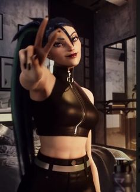
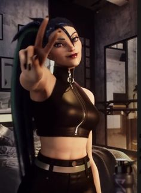

Kai'sa
A filha do vazioTalvez a coisa mais impressionante sobre a destemida caçadora do Vazio conhecida como Kai’Sa seja a forma pouco memorável como sua vida começou. Ela não é descendente de guerreiros tribais forjados por gerações de batalhas, nem foi invocada de terras distantes para enfrentar a ameaça desconhecida que vive à espreita nas profundezas de Shurima. Ela era apenas uma garota qualquer, filha de pais dedicados que chamavam os implacáveis desertos do sul de lar. Era lá que ela passava os dias brincando com os amigos e as noites sonhando com seu lugar no mundo.
 

O Vazio tinha sido despertado. Uma enorme fenda dividiu os rochedos do vale, engolindo toda a aldeia de Kaisa e todos que nela moravam, deixando apenas um monte de areia com colunas retorcidas, negras como a noite, despontando na superfície.
Quando Kaisa recobrou a consciência, ela se viu aprisionada nas profundezas. O medo tomou conta dela, mas ainda havia esperança; ela podia ouvir os gritos abafados dos outros sobreviventes. Infelizmente, no terceiro dia, a única voz que podia ser ouvida era a dela. Os amigos e a família dela tinham sucumbido. Ela estava sozinha na escuridão.
"Minha aparência pode assustar você, mas não se engane, eu estou do seu lado e nós lutaremos até o final " - Kai'Sa
- Região: Vazio
- Função: Atirador
- Idade: ??
- Preço: 4800EA / 975RP
- Sexo: Feminino
- Data de lançamento 07/03/2018
Logo ela percebeu que a couraça estava virando parte dela. Enquanto seus esforços diários de sobrevivência se transformavam em anos, a segunda pele crescia com ela, assim como também crescia sua determinação. Agora ela tinha mais do que esperança, ela tinha um plano. Lute com raça. Permaneça viva. Encontre uma saída.
Embora ela já tenha destruído várias criaturas do Vazio, ela sabe que muitas das pessoas que ela protege também a veem como um monstro. Na verdade, seu nome começou a se tornar uma lenda, um eco dos antigos horrores da amaldiçoada Icathia. Ela não era mais Kaisa… e sim Kai’Sa.

Imagem ilustrada por Foritis Wang
Creditos do Avatar da Kai'sa e a primeira imagem ao Inspira Gamer (No pinterst)
Imagen da Kai'sa fazendo o sinal de legal credito ao ✎ᐝｍｏｃｈｉ🐬(No Pinterst)
As duas imagens no canto superior direito, são de totais creditos a empresa criadora do jogo Riot Games.